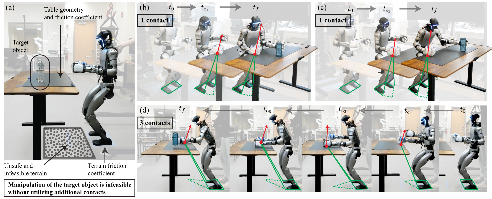
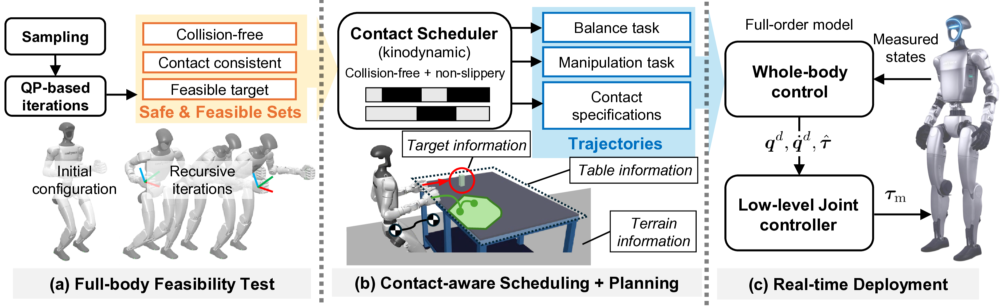
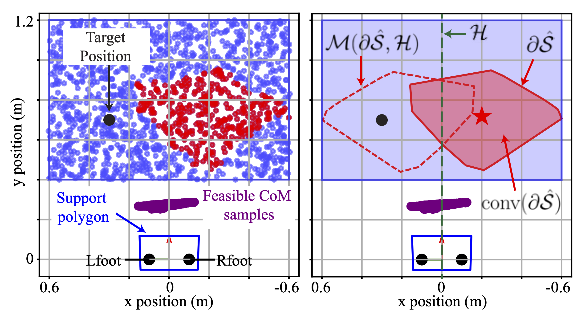
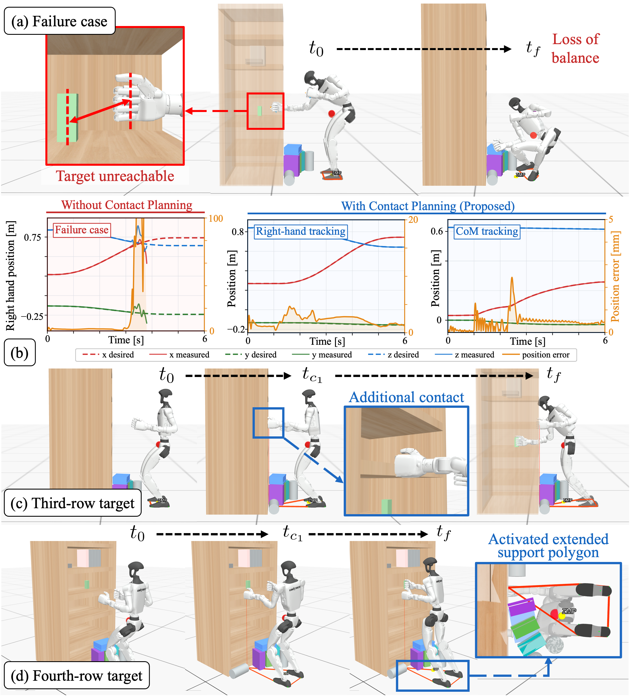
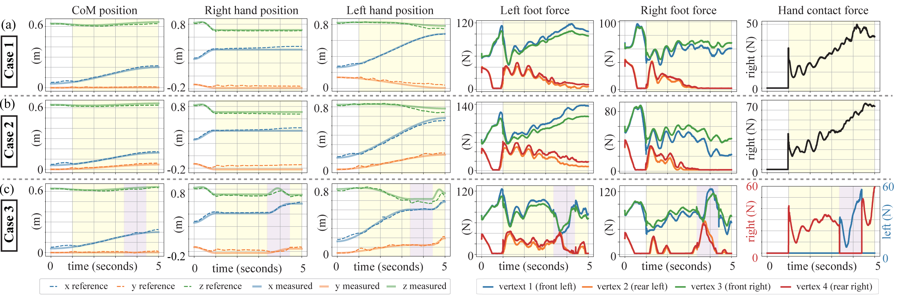

Autonomous Contact Synthesis
Determines the number, location, and timing of auxiliary contacts from the task and environment.
RAL 2026 Project Page
Project Summary
Humanoid manipulation often becomes unsafe when a target is reachable only by leaning, shifting support, or making contact with the environment. This work integrates full-body feasibility reasoning, kinodynamic contact planning, and whole-body control so the robot can decide how to create stabilizing contacts while executing the manipulation task.
The planner uses geometric and frictional information to generate feasible, task-dependent contacts without predefined contact heuristics. A reduced-order centroidal model keeps contact scheduling tractable, while full-body kinematics and whole-body control preserve high-fidelity execution on the humanoid robot.
Determines the number, location, and timing of auxiliary contacts from the task and environment.
Filters contact candidates with full-body kinematics, collision constraints, and reachable CoM regions.
Tracks the planned CoM and hand trajectories through a whole-body controller and joint-level control stack.
Motivation

Framework
The robot first identifies safe and feasible contact candidates, then solves a kinodynamic contact scheduling problem, and finally deploys the generated trajectories with a full-order whole-body controller.

Method
Optimization-based inverse kinematics screens candidate contact poses under reachability, collision, and task constraints.
A mixed-integer formulation selects active contacts and timing while enforcing frictional and geometric consistency.
The reduced-order model plans stable CoM motion over the active support region without carrying the full robot state.
The full-order controller tracks CoM, hand, and contact-force objectives during hardware execution.

Results

Simulation Evidence
Shelf-reaching simulations compare loss of balance without planning against successful reaching with an activated support polygon.

Tracking Evidence
The shaded intervals show when hand contacts are active while the measured signals track the planned motion.
Citation
@misc{kim2026integrated,
title={An Integrated Framework for Safe and Balanced Humanoid Manipulation via Contact-Aware Planning and Whole-Body Control},
author={Kim, JunYoung and Lee, Jaemin},
year={2026},
note={Manuscript in preparation}
}